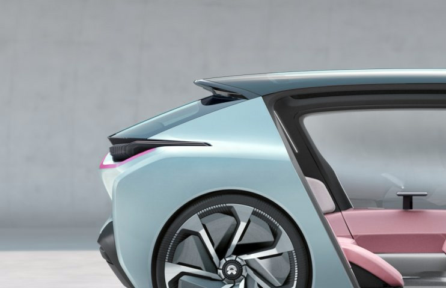
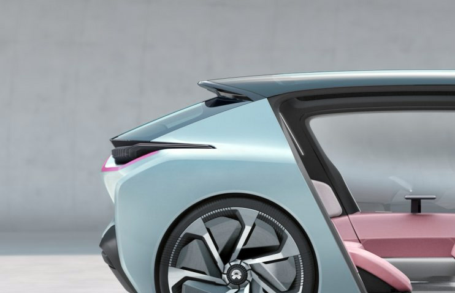

Future Technologies
The future is fast approaching, and a new era of digital innovation and disruption is here.

The future is fast approaching, and a new era of digital innovation and disruption is here.

Automation and artificial intelligence are hot topics these days This transformation has broad impacts
The future is fast approaching, and a new era of digital innovation and disruption is here. Or, more accurately, according to Josh Bersin, “The future of work is already here.” So yes, the robots are coming. These robots aren’t physical machines; they’re software “bots” installed on desktop computers or in the cloud that can be configured to automate increasingly complex tasks, such as moving, manipulating, and validating data.
read more
The technology space has long been the most exciting and watched industry for a number of years now. Innovations in the sector have radically changed the way we live. In many cases, it has created completely new industries and services.
Tesla recently unveiled its fully electric heavy duty truck after months of delays and teasers. The Tesla Semi features striking looks and is an ambitious challenge to the haulage industry. In unveiling the all-electric Tesla Semi, Elon Musk fulfilled his
The technology space has long been the most exciting and watched industry for a number of years now. Innovations in the sector have radically changed the way we live. In many cases, it has created completely new industries and services.
Tesla’s Semi is off to a promising start, despite there being no official pricing information available yet
Tesla has said that its cost of operation for the Semi will help shippers save money on a per mile basis right away, and that’s likely meant to help lessen the impact of sticker shock when it finally does reveal the upfront price. But as I mentioned with the Walmart pilot, which will involve a trial of 15 Semi trucks across the U.S. and Canada, there’s additional value in helping these major shippers meet their green targets.
read more 



RPA can be an upgrade over humans when accuracy and speed count—not just in transaction processing but also in more complex tasks such as regulatory reporting and contract management.
These technologies can scale rapidly, provide a means to capture operational expertise for broader deployment, and deliver services globally on a 24/7 schedule in multiple languages.
Automating parts of the annual compensation process enables the redeployment of HR resources to focus on coaching managers and developing engagement action plans. RPA can also directly increase HR
Robotic process automation (RPA) works at the user interface level, bridges the gap between disparate technologies, and performs repetitive rules-based processes.


Technology is developing at an enormous speed and you never know what's next to come, say, for example, in 2020.
One of those who like to contemplate about the future of technology is French designer Josselin Zaigouche who decided to design this incredible gadget, dubbed Apple Black Hole (and it's not because it will such Apple down if it hits the market). The name was probably inspired by the numerous applications one can find in Apple's device (such as iPhone and iPad).
read more
Tech companies rang in the start of the new year by unveiling some of their ambitious plans for the coming months. Startups and multinational companies alike are beginning to feel the ripple effects of innovation in the industry, with technology becoming more intertwined in everyday lives each year.
As 2018 progresses, here are 5 future technologies you can expect to reach the public in the next couple of years
The Internet of Things has long been talked about amongst tech insiders as the next big innovation in home technology.
While large-scale innovation in automation has traditionally been limited to the production side of society.
After Bitcoin’s meteoric price jump in 2017, major tech players have begun to take cryptocurrencies seriously.
Blockchain, the decentralized ledger that holds together cryptocurrencies, has applications reaching.
Artificial intelligence is seeing the light and applications of the technology are already being worked on.
Technology has forever changed the world we live in. We're online, in one way or another, all day long. Our phones and computers have become reflections of our personalities, our interests, and our identities. They hold much that is important to us.